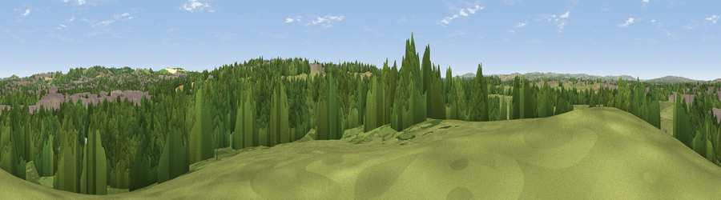

Viewpoint near East Rainton
#35570 in England · top 76% of its area beats it · near East RaintonThe view, rendered

A 360° render of this exact spot computed from the terrain model, tree cover and land cover — summer colours, afternoon light, calibrated against photographs of famous viewpoints. Real trees, hedges and buildings will differ in detail.
The panorama
Grey silhouette: terrain skyline in each direction (720 bearings, Earth curvature and refraction included). Dashed green: skyline with trees (+15 m) and buildings (+8 m) as obstacles. Blue strip: how far the ground is visible on each bearing.
Where the view opens
Wedge length = distance to the farthest visible ground on that bearing (vegetation-aware). Rings at 10, 25 and 50 km.
What fills the view
53% woodland · 28% grassland · 11% built-up · 5% cropland · 2% water
Angular shares of the visible panorama (visual magnitude), not map area. Landscape diversity 0.52 (0–1 Shannon).
Key numbers
More beautiful places nearby
The staircase of upgrades: each row has a higher view potential than everything closer. Driving times are estimates from straight-line distance, calibrated against real road routing — check an actual route before setting out.
| Place | Direction | Drive | Score |
|---|---|---|---|
| Viewpoint near Houghton-le-Spring | ENE · 3 km | ~7 min | 57.6 |
| Viewpoint near High Pittington | SSE · 3 km | ~7 min | 60.6 |
| Cobbler's Hill | SSE · 3 km | ~8 min | 64.8 |
| Viewpoint near Hetton-le-Hole | E · 4 km | ~9 min | 65.4 |
| Viewpoint near Houghton-le-Spring | NE · 4 km | ~10 min | 72.0 |
| Viewpoint near Houghton-le-Spring | ENE · 5 km | ~11 min | 73.7 |
| Viewpoint near Houghton-le-Spring | ENE · 5 km | ~12 min | 76.0 |
| Viewpoint near Sunniside | NW · 14 km | ~26 min | 77.6 |
54.82960, -1.49289 · source: screening · position refined by local search. Computed location — check access rights before visiting.